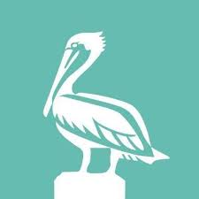
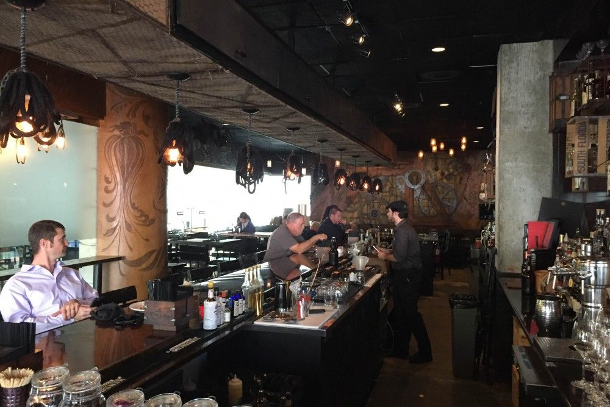
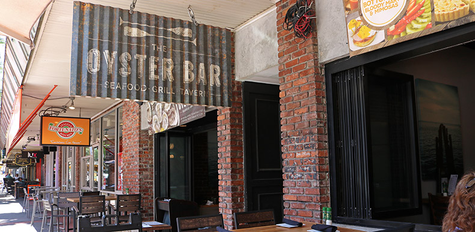
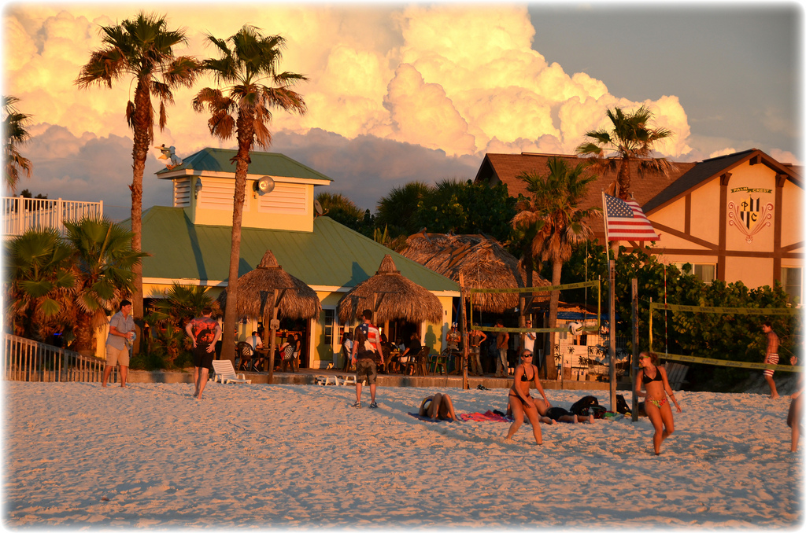

Places you should visit while in St. Petersburg Florida.
1. The Mill on Central Ave.
2. The Oyster Bar
3. The Undertow
The Mill on Central Avenue

The Mill won the Golden Spoon Award in 2016. This award is given
to the best new restaurant in the entire state of Florida.
The cuisine is a cross between Classical French and
Rustic American. The best examples of this are items
such as meatloaf wellington or lamb shank pot pie.
The meatloaf wellington is beef, pork, veal, and a mirepoix (carrots, celery, and onions)
It is then coated with a housemade tomatoe sauce, wrapped with taleggio cheese, and philo dough.
The interior of the restaurant is made to look as the restuarant is named, a mill.
Most everything, from the tables to the bathrooms, is used from refurbished local farm
items. The walls were designed by a local art phenom that helped to restor the
Sistine Chapel.
Whether you go there for the food, the ambience, or the classical, seasonal
cocktails, you will never be disappointed. You should definitley try
the paloma. This cocktail has won numerous awards, such as the Best in The Bay.
The Oyster Bar

The second place to go isn't far away. In fact, it is right across the street. Obviously, it is
known for the selection of oysters. On any given day, they can have at the bare
minimum of 4 to up to 8 different fresh oysters.
The best thing about this restaurant, besides the fresh oysters and local seafood
offerend daily, is the Sunday brunch. From the hours of 10 am until 3 pm, for only $25 you
get an all you can eat buffet. Items on this insane spread include but not limited to fresh
carved prime rib, an omellete station, smoked salmon, fresh shrimp, and way
to many more to list. Not only do you get that deal, you can also do a bottomless
bloody mary and mimosa bar. It is serve yourself. Your server simply brings you a fresh glass
and you can make your own cocktails to your liking along with a wide variety of garnishes.
If you do plan on trying to get in for lunch, you should try to get there as early as possible.
The place tends to fill up within the first hour (outside and inside). People also like to sit at
their tables for the duration of brunch to get the best bang for their buck. A full menu is still
offered during this time and the rest of the week. Reservations should be made for the weekend, but
during the week it is fairly easy to get a table out front or in the dining room.
The Undertow

Now we go out of downtown St. Pete to the beach, finally. If you are looking for a cheap dive bar,
say no more. The Undertow has you covered with cheap basic drinks (even your frozen ones) along with plenty of
games to keep you entertained.
This is one of the rare bars on the beach that allows you to park for free. This might seem like a
small thing, but it is great. Most places you go to make you pay at least $10 or more to pakr. If they don't
do that, you have to find a place on the street and feed that meter every 2 hours. (So annoying)
While you sit there and sip your drink and eat your finger food, you can watch any sport on their 12 tv's.
If you aren't into that, you can watch the two sand volleyball courts. There are usually highly competitive
games going on or there are two man teams practicing. Maybe you want to get out there and play a little as well.
They will let you borrow a ball at the bar. Getting too hot? Head to the Gulf. Just go about 30 feet
and jump right in. Drink to much? Just get a room at the small hotel right above the bar. Just don't forget to stay
for the "Green Flash." This happens right whne the sun disappears at sunset. Everyone stops and stares. Once it is finally
done, there is a huge cheers and back to the partying.